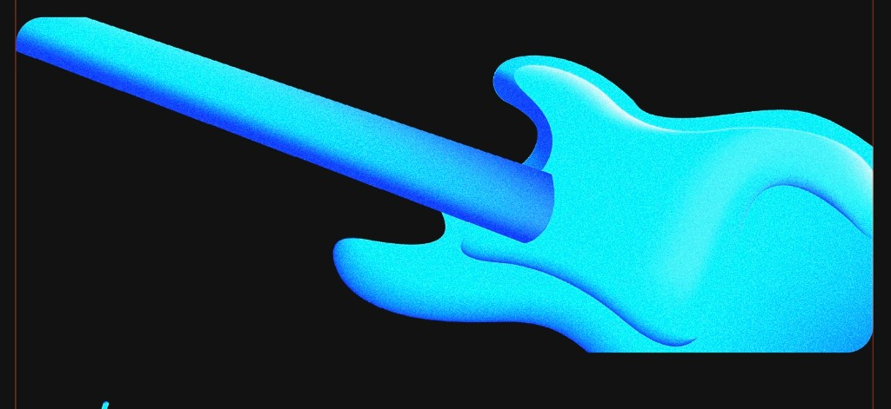

About
The electric bass is the foundation of the modern rhythm section—built to cut through a full band with clarity while locking in with drums and harmony instruments. From Leo Fender’s first production instruments to today’s multi-scale and active designs, builders have refined neck profiles, pickup placement, and electronics so players can shape tone from deep sub-bass to articulate midrange punch.
Solid-body electrics reward consistent setup: neck relief, string height, and intonation work together so every fret speaks evenly. Whether you prefer roundwounds for brightness or flats for thump, matching string gauge to your nut and bridge keeps tension balanced and reduces unnecessary wear on frets and hardware.
Amplify focuses on practical care—cleaning corrosion from jacks and pots, shielding noisy cavities, and knowing when a fret dress or electronics refresh will do more than a new set of strings alone. Understanding your instrument makes it easier to play in tune, record cleanly, and show up sounding like you every night.